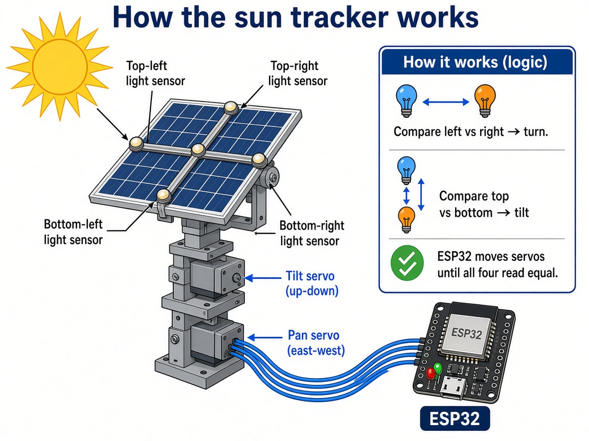

Guide · Checked on November 19, 2026
Off-grid solar + battery build guide
A beginner-friendly, step-by-step plan to build a small 12 V solar and battery system, one phase at a time. Every step has a Remember box and a Check it works test, and each phase has budget and better prices checked on November 19, 2026.
Read this first
You are starting with 12 V parts, which can’t shock you the way house wiring can. But a LiFePO4 battery can still start a fire if its terminals are shorted, and a solar panel makes power whenever light hits it. Fuse every positive wire, cover the panel while wiring, take off jewelry, and don’t skip a ‘Check it works’ step. Anything touching your house wiring, or any wind tower, steam or bigger voltage, is for a professional.
01The big picture
![Block diagram of the whole system. A solar panel on a sun tracker feeds an MPPT charge controller, which charges a 12 V LiFePO4 battery. From the battery, red positive wires run through a fuse to a battery shunt, then to a 12 V DC fuse box feeding an ESP32 sensor station, a camera and LED lights, and to a pure sine inverter feeding small AC outlets. A phone dashboard shows battery, solar and temperature over Wi-Fi. A dashed purple line marks a later, electrician-installed transfer switch to house circuits.](diagram-1.jpg)
How it works: the panel feeds the MPPT charge controller, which charges the battery. Everything else draws from the battery through a main fuse, a shunt that counts the power, and a fuse box for 12 V loads. An inverter turns 12 V into 120 V for small plug-in gear. Each phase below works on its own, so you can stop after any phase and still have something that works.
Each step has one action, a Remember box (why it matters) and a Check it works test. Do not go on until the check passes.
Phase 0Safety basics and tools
Do this first. About 1 evening. Cost: budget $196.88 · better $382.29
Before buying any big parts, learn the habits that keep you safe.
0.1Gather your starter tools: a digital multimeter, insulated screwdrivers and wrenches, wire stripper, a lug crimper (hammer or hydraulic), heat-shrink tubing, a small torque wrench or driver, safety glasses and insulated gloves.
Remember
Insulated tools matter. A metal wrench dropped across a battery’s two terminals makes a huge spark and can burn you.
Check it works
Everything is laid out on a table and nothing is missing from the list.
0.2Get a fire extinguisher (ABC type) and a smoke alarm plus a carbon monoxide alarm for the garage. Mount the extinguisher near the door, not next to the battery.
Remember
You want to reach the extinguisher on your way OUT, not through the problem.
Check it works
Press the test button on both alarms. They beep.
0.3Learn the multimeter on a harmless battery. Turn the dial to DC volts (the V with a straight line). Red probe in the V jack, black probe in COM. Touch red to the + end of an AA battery and black to the − end.
Remember
Use voltage mode for batteries and wires. Never use the amps (A) setting on a battery or power supply. That is how meters and fingers get burned.
Check it works
The AA reads about 1.5 V. Swap the probes and it shows a minus sign. That minus sign is how you catch backwards wiring.
0.4Learn the beep (continuity) test. Turn the dial to the beep symbol, touch the two probes together, and it beeps. Now test a small car fuse: touch one probe to each metal blade.
Remember
Only use the beep test on dead wires with nothing connected and no power. Never on a live circuit.
Check it works
A good fuse beeps. A blown fuse stays silent.
0.5Learn polarity. Red is positive (+). Black is negative (−). Always use red wire for + and black wire for −. Wrap red or black tape on both ends of any wire that isn’t colored.
Remember
Reversed polarity can destroy a charge controller or inverter instantly. Check twice before every connection.
Check it works
Pick up any wire in your pile and tell which one it is just by looking at the color or tape.
0.6Learn the short-circuit rule: never let anything metal touch both battery terminals at once, and never let a wire’s two bare ends touch while it’s connected to the battery. Take off rings, watches and necklaces before working. Cover terminals with insulating caps until the moment you connect them.
Remember
A LiFePO4 battery can push thousands of amps into a short. That means melted metal and fire, in a fraction of a second.
Check it works
Jewelry is off. Terminal caps are on. Say the rule out loud once.
0.7Learn the fuse rule. A fuse protects the wire, not the gadget. Rule of thumb: (1) find the most amps the device can draw, (2) pick wire that can carry more than that, (3) pick a fuse a bit above the device’s max (about 125%), but never above what the wire can carry. Put the fuse on the + wire, as close to the battery as you can (within about 7 in / 18 cm).
Remember
If the fuse is bigger than the wire can carry, the wire melts before the fuse blinks. If it’s too small, it blows for no reason, which is annoying but safe.
Check it works
Practice: a gadget draws 6 A max. 6 × 1.25 = 7.5, so the next standard fuse is 10 A, on wire rated for at least 10 A. Do two more of your own on paper.
0.8Learn wire gauge. In AWG, a smaller number means thicker wire. Use stranded (flexible) copper wire. Thicker is always safe. Thinner than needed gets hot. The table below is a starting guide for short runs (2.5 m / 8 ft each way or less).
Remember
Longer wire needs thicker wire because it loses voltage on the way. Victron suggests keeping total loss under 2.5% (0.3 V on a 12 V system).
Check it works
Find your wire’s gauge printed on its jacket and match it to the table.
0.9Learn the shutdown and start-up order and write it on a card by the board. SHUT DOWN: loads off, then inverter off, then solar (PV) disconnect off, then battery disconnect off. Pull the main fuse before touching any bare metal. START UP is the reverse for the battery first: battery disconnect on, check controller, then PV, then loads one at a time.
Remember
Solar panels make power any time light hits them. Switching the battery off does not make the panel wiring dead.
Check it works
Say both routines from memory without looking at the card.
02Wire size quick table
Maximum amps for a total cable length (positive plus negative) up to 5 m (about 16 ft). The mm² amps are from Victron’s Wiring Unlimited book. The AWG column is our conversion to the nearest common size that is at least as thick. When your device’s manual gives a size, use the manual.
Swipe or scroll sideways to see every column.
| Victron size (max amps) | Nearest AWG | Typical use |
|---|---|---|
| 4 mm² (12 A) | 10 AWG | Small DC circuits and lights |
| 6 mm² (18 A) | 8 AWG | Larger DC circuits |
| 10 mm² (30 A) | 6 AWG | Controller and sensor feeds |
| 16 mm² (48 A) | 4 AWG | Larger controller feed |
| 25 mm² (75 A) | 3 AWG | Small inverter |
| 35 mm² (105 A) | 1 AWG | Larger inverter (1,000 W at 12 V) |
Phase 1Plan and size
Pencil and paper. About 1 evening. Cost: $0
You will work out how much power you need before spending money.
1.1List everything you want to run in the garage. Start with: LED lights, ESP32 sensor station, outdoor camera, a fan, phone and tool chargers. Leave out space heaters, compressors, welders and anything that heats (they are far too big for this system).
Remember
Anything that makes heat (heaters, kettles, toasters, hair dryers) uses 10 to 20 times more power than lights. Not for this build.
Check it works
Your list has 5 to 8 items and no heaters.
1.2Find each item’s watts. Look on its label or power adapter (watts, or volts × amps). If it only says amps at 12 V, watts = 12 × amps. For a better answer, use a plug-in watt meter (a Kill-A-Watt style).
Remember
Use the real running number, not the biggest number on the box. When in doubt, round up.
Check it works
Every item on your list has a watts number next to it.
1.3Write how many hours per day each runs. A camera or sensor runs 24 hours. Lights maybe 3 or 4.
Remember
Be honest, not hopeful. Hours are the number people guess wrong most.
Check it works
Every item has hours.
1.4Do the watt-hour math. Watt-hours (Wh) = watts × hours. Add them all. Then add 25% on top to cover wasted power in the wires, controller and inverter. Use the example table below as a guide, then fill in your own.
Remember
Watt-hours are like gallons in a tank. Watts are how fast you’re draining it.
Check it works
Your total and your total with 25% added are both written down.
1.5Size the battery. Aim for at least 2 days of use with no sun at all. For a 12 V LiFePO4 battery, a 100 Ah one holds about 1,280 Wh. Plan on using only about 80% of it.
Remember
Standard LiFePO4 batteries must not be charged below freezing (32 °F / 0 °C). Their built-in protection (the BMS) blocks charging when cold. For an unheated garage, buy a self-heating (cold-weather) model or put the battery in a warm, insulated spot.
Check it works
Battery Wh × 0.8 is at least 2 × your daily Wh. If not, choose a bigger battery.
1.6Size the panel for winter, not summer. In a northern US city such as Chicago, a day’s average sun is about 2.7 peak sun hours in December versus about 5.4 in June, so winter is the hard time. Panel watts ≈ your daily Wh (with the 25%) ÷ 2.7 ÷ 0.75. Round up, and leave extra for snow-covered days.
Remember
Snow or shade on a panel can drop output to nearly zero. The winter number is the one that matters.
Check it works
You have a panel size in watts that works in December, not just in June.
1.7Pick the charge controller (MPPT type). It must (1) handle your panel’s maximum voltage, including extra voltage on very cold mornings, and (2) handle the amps: panel watts ÷ 12 V, plus a margin. Pick one that can also do 24 V, so you can grow later.
Remember
Cold panels make higher voltage. Never go above the controller’s max PV voltage.
Check it works
Controller’s max PV voltage is higher than your panel’s listed open-circuit voltage (Voc) by a good margin (at least 20%).
1.8Pick the inverter. Pure sine wave, 12 V, and small. Add up the biggest AC thing you’ll plug in at once, then add a margin. For lights, chargers and small gear, 600 to 1,000 W is plenty.
Remember
An inverter that is switched on and idle still drains the battery all day. Turn it off when you aren’t using AC.
Check it works
Inverter watts are above your biggest AC load, and its manual lists the cable and fuse size it needs.
1.9Plan to grow. Pick a battery that can be wired in parallel with a second one, a controller that supports a bigger panel or 24 V, busbars rated for more amps than you need today, and a fuse box with spare slots.
Remember
Buying slightly bigger parts for the core (busbars, shunt, wire, disconnect) costs little now and saves redoing it later.
Check it works
Write down three upgrades you want in the next year (more panel, second battery, 24 V). Make sure your parts allow each.
03Watt-hour worksheet (EXAMPLE numbers only)
These are example numbers to show the math. Your numbers will be different, so measure your own. Watt-hours = watts × hours.
Swipe or scroll sideways to see every column.
| Item (example) | Watts | Hours per day | Watt-hours |
|---|---|---|---|
| LED lights (4 × 10 W) | 40 W | 4 h | 160 Wh |
| ESP32 sensor station | 1 W | 24 h | 24 Wh |
| Outdoor camera | 2 W | 24 h | 48 Wh |
| Small fan | 15 W | 4 h | 60 Wh |
| Phone and tool chargers | 20 W | 2 h | 40 Wh |
| Total (example) | 332 Wh | ||
| Plus 25% for losses | about 415 Wh |
Example sizing: a 100 Ah LiFePO4 battery holds about 1,280 Wh, with about 1,020 Wh usable, so it could run this example load for about 2 days with no sun. For a December day in a northern US city such as Chicago (about 2.7 peak sun hours), 415 ÷ 2.7 ÷ 0.75 ≈ 205 W. So a 200 W panel is the minimum, and 300 W gives more room for cloud and snow. Real inverter idle power is not included, so turn it off when it isn’t needed.
Phase 2Core build on a wall board
Battery, fuses, controller, shunt, fuse box, inverter. About 2 weekends. Cost: budget $1,201.68 · better $1,483.49
This is the heart of the system. Take your time and use the diagram. The order matters: build with everything switched off, then power up the battery side, and add the panel last.
2.1Build a wall board. Screw a 3/4 in plywood sheet (about 4 × 4 ft) into the wall studs in the garage, in a dry spot away from gas cans and car exhaust. Leave room on one side for the battery on a shelf or floor tray.
Remember
The controller and inverter get warm. Keep curtains, paper, rags and plastic away from them. Victron says the controller must sit in a heatproof area, not where people can touch the wiring.
Check it works
Pull hard on the board. It doesn’t move.
2.2Lay out every part on the board with NO wires yet: battery nearby, then main fuse, battery disconnect switch, shunt, busbars (one +, one −), MPPT controller, 12 V fuse box, inverter. Keep the thick-cable parts close together. Mark spots with pencil and measure each cable length.
Remember
Short thick cables are better than long thick cables. Keep the battery, fuse, shunt and busbars within a couple of feet.
Check it works
Everything fits, with room to reach each terminal.
2.3Mount the busbars, shunt, controller, fuse box and inverter. Mount the battery in its tray or shelf. Leave the battery disconnect switch OFF and the main fuse OUT (or its holder open).
Remember
No fuse in, no switch on means the system is dead while you build it.
Check it works
Everything is bolted down. Switch is off. Fuse is out.
2.4Make your cables. Cut to length. Strip the end. Crimp the right-size lug with a proper crimper. Slide on heat shrink and heat it. Tug hard on each one. Red for +, black for −.
Remember
A loose crimp makes heat. Use the right lugs for your wire, and the right crimper (a hammer or hydraulic crimper, not pliers).
Check it works
Each lug survives a strong tug and has no loose strands.
2.5Wire the NEGATIVE side first. Battery − to the shunt’s battery side. The shunt’s other side goes to the negative busbar. Every other negative in the system goes to the negative busbar, never straight to the battery.
Remember
The shunt only counts what flows through it. If any negative skips the shunt, your battery percentage will be wrong.
Check it works
Beep test between battery − and the busbar: it beeps through the shunt. No other path from the battery − to the busbar.
2.6Wire the POSITIVE side. Battery + to the disconnect switch, then to the main fuse (a Class T type is a good choice for lithium), then to the positive busbar. Leave the fuse out.
Remember
With a lithium battery, at least one fuse must be able to stop the battery’s full short-circuit current. Class T fuses are built for that. Check your battery’s max short-circuit current on its datasheet.
Check it works
With the fuse out, the beep test between the + busbar and the − busbar is silent (no short).
2.7Wire the charge controller to the busbars. Its + goes through its own fuse (size from the controller’s manual) to the + busbar. Its − goes to the − busbar. Leave the solar input terminals empty. Follow the manual’s torque numbers for the terminals.
Remember
Always check the controller’s manual for the fuse size and torque. Victron’s manuals list both.
Check it works
Controller + and − are on the busbars. Solar terminals are empty. Fuse is out.
2.8Wire the 12 V DC fuse box. Its main feed comes from the + busbar through a fuse (sized to the wire), its − block to the − busbar. Leave the individual fuses out for now.
Remember
Each circuit later gets its own fuse. Never feed two different wire sizes from one fuse unless the fuse fits the thinnest wire.
Check it works
Fuse box is wired, empty of fuses, and labeled for each slot.
2.9Wire the inverter. Short, thick cables from the busbars through its own fuse (the size in the inverter’s manual) to the inverter. Keep the inverter switch OFF. Connect its ground terminal as the manual says.
Remember
Inverters pull huge current. A 1,000 W 12 V inverter can pull about 90 A or more. Thin cable here is the number-one cause of melted wiring.
Check it works
Cable size and fuse match the inverter’s manual. Inverter switch is off.
2.10Do a full check before power. Tug every cable. Check the torque. Take a photo of the whole board. Compare it to the system diagram above. Check every + goes to + and every − goes to −.
Remember
Photographs help you later and help any electrician you ever call.
Check it works
Beep test between + and − busbars (fuses out) is silent. Each wire’s end is where the diagram shows.
2.11Power up the battery side. Put on safety glasses. Insert the main fuse, then turn the battery disconnect ON. Measure voltage at the busbars with the multimeter.
Remember
Connect the battery to the charge controller BEFORE any solar panel. The controller reads the battery to find 12 V vs 24 V, and Victron says to wait about 10 seconds. Doing it the wrong way round can damage the controller.
Check it works
A fully charged 12 V LiFePO4 battery reads about 13.3 to 13.6 V. The controller screen lights up and shows a 12 V system after about 10 seconds.
2.12Set up the charge controller for LiFePO4. Pick the lithium setting or enter the battery maker’s numbers (commonly about 14.2 to 14.6 V for the main charge and about 13.5 V for the float). Set the battery’s capacity (Ah) in the shunt.
Remember
Always use the battery maker’s numbers. They win over any general number you read here.
Check it works
The controller shows the LiFePO4 profile. The shunt shows the right capacity.
2.13Test the loads. Put a fuse and one light on the DC fuse box. Turn the light on. Then test the inverter with a small lamp only. Watch the shunt.
Remember
Test with something small first. Never plug in a motor, a heater or a tool on a first test.
Check it works
The light works. The shunt shows current going out (the number changes when the light turns on and off). The lamp works on the inverter.
Phase 3Panel outside
Mount, ground, wall entry, disconnect. About 1 weekend. Cost: budget $469.77 · better $721.75
Now you bring the sun in.
3.1Pick the panel spot. Face true south, tilt about 35 to 40 degrees for year-round use (steeper is better for winter), with no shadows between about 9 AM and 3 PM, and as close to the garage wall as you can. Start on the ground or a short wall mount, not the roof.
Remember
A short wire run loses less power. And a ground mount is far safer for a first build.
Check it works
Look at the spot at 9 AM, noon, and 3 PM on a sunny day. No shadows land on it.
3.2Build a strong mount. Use a rated panel mount kit anchored deep or bolted to solid framing. It must handle winter wind and snow load.
Remember
A panel acts like a sail. A weak mount can fail in a storm and throw the panel.
Check it works
Push hard on the empty frame. It doesn’t wobble.
3.3Mount the panel, then COVER it with an opaque cover (cardboard or a dark tarp) before you touch any wires.
Remember
A panel makes voltage whenever light touches it. Cover it for all wiring.
Check it works
No light reaches the panel face. Test with a multimeter on the connectors: about 0 V.
3.4Ground the panel frame. Attach a ground lug to the frame and run bare copper wire (commonly 6 AWG) to a ground rod or the grounding point your local inspector approves. Ask your local building department what they want.
Remember
Victron says to ground the panel frame to reduce the effect of lightning, and to keep only ONE ground connection for the electrical system, near the battery.
Check it works
Beep test from the frame to the ground rod: beeps. Frame is bonded.
3.5Run the panel wire. Use sunlight-resistant solar (PV) wire, commonly 10 AWG, from the panel to the garage wall, in conduit. Use MC4 connectors with the right MC4 crimper. Never connect the two bare ends together.
Remember
Keep the run short, and use the Victron voltage-drop calculator for long runs. Your loss should stay under about 3%.
Check it works
Wire reaches the garage wall with the conduit fixed in place and no cuts or pinches.
3.6Make a weatherproof wall entry. Use a through-wall conduit fitting or weatherhead pointing down with a drip loop, sealed with exterior-rated sealant. Water must never be able to run down the wire into the garage.
Remember
Water in a wire run corrodes the connections and can short them. Rain should drip off the loop, not follow the wire.
Check it works
Spray a hose at it (with the panel covered and the wires disconnected). No water inside.
3.7Install a PV disconnect inside, next to the controller. Use a DC-rated breaker or switch, with a voltage rating above the panel’s Voc on a cold day and an amp rating above its short-circuit current (Isc). An AC breaker is NOT the same thing.
Remember
DC arcs don’t go out by themselves like AC. A breaker not made for DC can burn up.
Check it works
Disconnect rating (V and A) is on the label and bigger than the panel’s numbers. It is OFF.
3.8Test the panel wires. Uncover the panel in daylight. At the disconnect, with the wires still disconnected from the controller, measure DC voltage between + and −. Confirm which is + and which is −.
Remember
Expect about the panel’s listed Voc. If you get a minus sign, you have the wires reversed.
Check it works
You read about the panel’s listed Voc, with the polarity right.
3.9Connect the panel to the controller. The battery side must already be ON and showing the controller screen. Cover the panel again, connect the PV wires to the controller’s solar terminals (+ to +, − to −), then turn the PV disconnect ON and uncover the panel.
Remember
Order is: battery first, panel second. Shut down in the reverse order: PV off, then battery.
Check it works
The controller shows panel volts and charging amps. The shunt shows current going into the battery.
Phase 4Monitoring on your phone
Shunt app, Home Assistant, or ESP32. About 1 evening. Cost: budget $0 · better $216.35
You can’t manage what you can’t see. Do this before adding more loads.
4.1Set up the shunt’s own app. A battery shunt with Bluetooth, such as the Victron SmartShunt, works with the free VictronConnect app on your phone. Pair it and enter your battery’s Ah.
Remember
The shunt only knows what you tell it. If the Ah number is wrong, the percentage will be wrong.
Check it works
Your phone shows battery volts, amps and a percentage.
4.2Turn on the shunt’s Instant Readout setting and copy its encryption key (VictronConnect: Settings, Product Info, Instant Readout via Bluetooth, Show).
Remember
Treat the key like a password. Don’t post it online.
Check it works
You have the key saved somewhere safe.
4.3Choose your dashboard. Easiest: just use the shunt’s app. Better: Home Assistant (free) with its Victron BLE integration. Most fun to learn: an ESP32 running ESPHome with the victron_ble add-on, which sends battery data over Wi-Fi.
Remember
Bluetooth only reaches about 10 m, so put the ESP32 or Home Assistant close to the board. Close the VictronConnect app, since it blocks the broadcast while connected.
Check it works
Voltage, current and % show up on your phone dashboard.
4.4Add the solar numbers: the controller can also broadcast Bluetooth data (a Victron controller works with the same app and integration).
Remember
One screen showing sun in, power out and battery % is how you learn what your system really does.
Check it works
Dashboard shows solar watts in and load watts out.
4.5Set alarms: low battery (for example 20%), and no charge for a day. Send them to your phone.
Remember
Don’t let the battery run flat. Low-battery protection will shut it off, but alarms stop you getting to that point.
Check it works
Switch on a light and watch the load number rise. Turn it off and it falls.
Phase 5Run your creations
Sensor station, outdoor camera, LED lights and fan. Cost: budget $86.28 · better $101.23
Time to use the power. Add one load at a time and watch the shunt after each.
5.1Add a USB 5 V supply for small electronics: a fused 12 V to 5 V converter (buck converter) with a 1 to 2 A fuse in the fuse box.
Remember
Never feed 12 V into a 5 V board directly. The board dies in a second.
Check it works
With a multimeter, the converter’s output reads 5 V before you plug anything in.
5.2Power the ESP32 sensor station. Use the 5 V supply, a temperature and humidity sensor, and a door or motion sensor. Send readings to the same dashboard.
Remember
Take the first steps on a bench first, then move it to the board.
Check it works
The dashboard shows temperature and door state from the garage.
5.3Put the LED lights on a fused circuit. Use 12 V LED strips or lights with a switch. Size the wire and fuse to the lights’ total amps (16 AWG with a 5 A fuse is a common small starting point).
Remember
Lights are the safest first load. They teach you everything about the fuse box.
Check it works
Lights come on from the switch. The shunt shows the added watts.
5.4Power the outdoor camera. If the camera is far from the board, use a 12 V run with a converter at the camera end (a long 5 V run loses too much). Size wire with the Victron calculator. Fuse the circuit at the fuse box. Alternatively, plug the camera’s own adapter into the inverter, which is simpler but costs idle power.
Remember
Long wires lose voltage. 5 V loses the most and 12 V much less. Always run higher voltage and step it down at the far end.
Check it works
Voltage at the camera end is steady, and the camera stays on all night.
5.5Add a small fan on its own fused circuit, then re-run your watt-hour sheet with the real numbers from the shunt. Compare them to your plan.
Remember
Real numbers beat guesses. The shunt now lets you check your math.
Check it works
Real daily watt-hours are within about 30% of your worksheet. If not, update the worksheet.
Phase 6Sun tracker (dual-axis)
Small panel first. Weeks, not days. Cost: budget $102.34 · better $226.37
A tracker aims the panel at the sun all day. Build and learn on a small panel first. Hold off on any big panel until the small one has worked through a few weeks of weather.

6.1Be honest about the goal. A tracker is a learning project. Adding more fixed panels often costs less than a tracker. Moving parts outside in winter ice, snow and wind need care. Build it for learning.
Remember
Start with a small panel (10 to 20 W) on a bench or low stand before putting any big panel on it.
Check it works
You have a small panel (separate from your main one) set aside for the tracker.
6.2Build the sensor head. Put four light sensors (light-dependent resistors, LDRs) in four corners with a cross-shaped divider between them. When the sun is off to one side, that side’s sensor sees more light.
Remember
Keep sensor wires short or shielded. The ESP32 reads each sensor as a number.
Check it works
Shine a flashlight on one corner and the matching number goes up.
6.3Wire the sensors to the ESP32 using voltage divider resistors. Use the pins on ADC1 (not ADC2, which stops working when Wi-Fi is on).
Remember
On the common ESP32 chip, ADC2 pins don’t work while Wi-Fi is on.
Check it works
You can print four stable numbers and see them change when you move a flashlight.
6.4Write the code. If left is brighter than right, rotate toward left. If up is brighter than down, tilt up. Use a small dead zone so it doesn’t jitter.
Remember
Move slowly, with pauses. A tracker should move a few times an hour, not every second.
Check it works
With the flashlight, the head moves toward it and stops when balanced.
6.5Add the motors. For a small panel use two hobby servos (pan and tilt). For a bigger panel use two 12 V linear actuators with limit switches, driven by a motor driver board (H-bridge), never straight from an ESP32 pin.
Remember
Motors need their own power wires and fuse. Connect their ground to the ESP32’s ground. Never power motors from the ESP32’s 5 V pin.
Check it works
Motors move the right way. Limit switches stop the travel on their own.
6.6Power it from the DC fuse box with its own fuse and converter (servos usually want 5 to 6 V). Put a big capacitor near the servos.
Remember
Motor start-up spikes can reboot the ESP32. A capacitor and separate converters prevent that.
Check it works
Motors move and the ESP32 does not reboot.
6.7Add a wind stow. If the wind is strong (use a small wind sensor or a rule like gusts above your limit), move the panel flat and low. Also park it facing east at dusk, ready for the morning.
Remember
A flat panel catches the least wind. Wind is what breaks trackers.
Check it works
Simulate high wind in code and watch the panel go flat on its own.
6.8Weatherproof it. Use IP65 or better boxes, cable glands, UV-resistant wire in conduit, and grease on moving joints. Add a manual override and a way to lock it flat when you work on it.
Remember
Water finds every gap. Seal the wire entries, then check after the first rain.
Check it works
After rain, the inside of the box is dry.
6.9Only after weeks of working on the small panel, think about the big one. Use linear actuators sized for the panel’s weight plus wind load, and stow it flat in high wind.
Remember
A big panel is heavy and has a lot of wind force. Go slowly.
Check it works
The big tracker handles a day of real weather with no problems.
Phase 7Wind turbine add-on
Only after solar works well. Cost: budget $309.99 · better $1,691.00
A small 12 V turbine adds power at night and in winter, when there’s wind. It has moving parts and a tower, so safety matters most here.
7.1Know the limits first. Small turbines need steady wind. In many places, they make a fraction of their rating on a typical day. Check your local wind and the zoning rules for tower height first.
Remember
The rating on the box is for strong wind. Your average output will be much lower. Your shunt will show the real number.
Check it works
You checked the average wind where you’d put it, and the local height limits.
7.2Pick a small 12 V turbine (a few hundred watts) built for a battery, with its own matching wind charge controller that has a dump load (also called a diversion load).
Remember
Never connect a turbine to a solar controller. Wind turbines need their own controller.
Check it works
Controller matches the turbine’s voltage and watts.
7.3Build the dump load. When the battery is full, the controller sends extra power to a resistor or heater element so the turbine is never left without a load. Size it to absorb the turbine’s maximum output, and mount it on metal in the open air.
Remember
A turbine with no load can spin too fast and destroy itself. Never disconnect the battery while the turbine is turning.
Check it works
In a test with a charged battery, the dump load warms up instead of the battery overcharging.
7.4Add a brake switch. A shorting switch across the turbine’s three output wires slows it (follow the maker’s instructions). Mount it where you can reach it from the ground.
Remember
Always brake the turbine BEFORE you touch the wires or climb anything.
Check it works
The blades slow or stop when the brake is on.
7.5Fuse everything. Put a fuse or breaker between the wind controller and the busbars, like you did with the solar controller.
Remember
Each source gets its own fuse. Same rules as before.
Check it works
Wind controller wired through its own fuse to the busbar.
7.6Tower safety. Use a tilt-up tower with guy wires or a short rated mast. Call your state’s utility-locate line (811) before you dig. Stay far from power lines (at least the tower’s height and a half). Never climb a tower with a turning turbine. Ground the tower for lightning.
Remember
Towers fall. Think about where it would land. Get a helper, and an inspector’s advice for anything tall.
Check it works
Tower holds in a hard push test with the guys attached. Nothing is within falling distance of power lines or the house.
7.7Connect and watch. With the battery on and the turbine braked, connect the turbine to its controller, release the brake and watch your dashboard.
Remember
Compare it with the sun. Learn from the numbers.
Check it works
The dashboard shows wind watts rising when the wind picks up.
Phase 8Future, heat-to-power from a wood stove
Make sure the stove is in good repair first. Be realistic. Cost: budget $101.96 · better $186.92
Heat power is real, but small. A thermoelectric stove fan is realistic and safe. DIY steam is not.
8.1First, fix the stove door gasket and test the seal. A leaking stove burns out of control and can let smoke or carbon monoxide into the room. Do this before you add anything to it. Make sure a CO alarm is working in the room.
Remember
Gasket first. Don’t add accessories to a stove that isn’t sealing right.
Check it works
A dollar bill closed in the door grips firmly all the way around, and the CO alarm tests OK.
8.2Start with the safest, simplest heat-to-power: a thermoelectric stove fan. It makes its own power from the stove’s heat. No wires, no battery. It is a good first step.
Remember
Typical output is just a few watts, only enough to turn the fan. Keep it off the front of the stove and away from the flue pipe. Don’t exceed about 650 °F (345 °C). Never touch the base when hot.
Check it works
The fan spins when the stove gets hot, and slows as it cools.
8.3If you want a little power for the battery, look at a stove-top TEG generator. Some sellers list about 10 W output with a USB or 12 V output. Use its own protection and a fused connection to your busbar, or charge a small separate battery.
Remember
10 W for four hours is about 40 Wh a day. That is a small top-up, nowhere near enough to run the garage.
Check it works
Meter reads real output while the stove is hot. Compare it to the maker’s claims.
8.4Don’t build a steam engine. Steam boilers are not recommended for a beginner (or a home build). Pressure vessels can burst with great force and scalding steam, and can kill or maim. Real model boilers need proper design, materials, safety valves and an inspection.
Remember
Plainly: DIY steam power is dangerous and not recommended. Skip it.
Check it works
Decision made: no steam. Spend that energy on TEG and solar.
8.5Stirling engines are fun to build and watch, but they make very little power (a few watts for small ones). Treat them as a hobby curiosity, not a power plan.
Remember
Fun to learn from. Not worth planning your power around.
Check it works
You understand a Stirling engine as a toy that spins, not an energy source.
Phase 9Later, linking to the house or garage panel
Electrician, permit and insurance required. Typical cost: $450–$1,650 (a range, not a quote)
This is the one step that is not a DIY step. A pro makes the connection, and you take care of the permits and the planning.
9.1Don’t wire to your house or garage panel yourself. Linking a battery or generator to the building’s wiring needs a licensed electrician.
Remember
Power fed backwards into the grid can kill utility workers. This is the single most dangerous mistake in home backup power.
Check it works
You have an electrician’s name before you do anything here.
9.2Plan to use a transfer switch or a listed generator interlock kit on the main panel. Both make it impossible for the grid and your system to be on at the same time. Only an electrician should fit them.
Remember
Without one of these, never plug anything into a wall outlet to power the house backwards (no cords with two male plugs).
Check it works
The electrician’s quote lists the transfer switch or interlock by name.
9.3Think about which loads you want on backup: lights, fridge, internet, well pump. A 12 V system can handle only the small ones. For bigger loads, you’ll want 24 V or 48 V and a larger inverter.
Remember
12 V gets thick and expensive over about 1,000 W. That’s where 24 V helps (half the amps for the same watts).
Check it works
A short list of critical loads with their watts.
9.4Think about a generator inlet. A generator inlet box lets you plug a portable generator into the house through the interlock or transfer switch, safely. It is a good add-on, and it can charge batteries too.
Remember
Run generators outside only. Carbon monoxide kills.
Check it works
You know where a generator would sit, at least 20 feet from windows.
9.5Call your local building department about permits, and your insurance company before you start. Ask which version of the National Electrical Code they use (Article 690 covers solar) and whether rapid shutdown, labeling and disconnects are required for your setup.
Remember
A permit protects you. Unpermitted work can cause an insurance claim to be denied.
Check it works
You have the permit answer and your insurer’s answer in writing.
05Things to always remember
- Fuse every positive wire, close to the battery. The fuse protects the wire.
- Connect the battery to the controller BEFORE the panel. Disconnect the panel BEFORE the battery.
- Cover the panel when you wire it. Light means voltage.
- Red is +, black is −. Check polarity twice.
- Never let metal touch both battery terminals. No jewelry.
- Thicker wire is safe. Thinner wire is not. Keep high-current wire short.
- Use DC-rated breakers and fuses for DC circuits. AC breakers are not the same.
- Cold weather: standard LiFePO4 must not charge below 32 °F (0 °C). Panel voltage goes UP when it’s cold.
- One ground point for the electrical system, near the battery. Frame grounded for lightning.
- Turn the inverter off when you’re not using AC. It drains power while idle.
- Never disconnect a wind turbine from its battery in wind. Brake it first.
- Never feed power into house wiring without an electrician and a transfer switch or interlock.
- Steam is not for beginners. Skip it.
- When unsure, stop and measure with the multimeter. When still unsure, ask a pro.
06Cost summary and running total
Prices below come from retailer listings checked on Nov 19, 2026. They are item prices only: no tax, and shipping is extra unless noted. Prices can change by checkout.
$2,469
Budget, Phases 0–8
$1,954.61 gets you through Phase 5, a working powered garage
$5,009
Better, Phases 0–8
$2,905.11 through Phase 5
$450–$1,650
Phase 9, electrician
Typical range, not a quote
Swipe or scroll sideways to see every column.
| Phase | Budget | Budget running total | Better | Better running total |
|---|---|---|---|---|
| 0 Safety and tools | $196.88 | $196.88 | $382.29 | $382.29 |
| 1 Plan and size | $0 | $196.88 | $0 | $382.29 |
| 2 Core build | $1,201.68 | $1,398.56 | $1,483.49 | $1,865.78 |
| 3 Panel outside | $469.77 | $1,868.33 | $721.75 | $2,587.53 |
| 4 Monitoring | $0 | $1,868.33 | $216.35 | $2,803.88 |
| 5 Your creations | $86.28 | $1,954.61 | $101.23 | $2,905.11 |
| 6 Sun tracker | $102.34 | $2,056.95 | $226.37 | $3,131.48 |
| 7 Wind turbine | $309.99 | $2,366.94 | $1,691.00 | $4,822.48 |
| 8 Stove heat | $101.96 | $2,468.90 | $186.92 | $5,009.40 |
| Grand total, Phases 0–8 | $2,468.90 | $5,009.40 | ||
| 9 House tie-in (range) | $450–$1,650 | $450–$1,650 |
How to read it: Budget is the cheapest sensible pick that could be verified. Better adds cold-weather or monitoring upgrades, a bigger panel, or sturdier parts. Where the two columns match, it is the same part. Phase 1 is free (paper, and Victron’s free toolkit app). Phase 4 budget is free too, because the shunt and controller already have Bluetooth and a free phone app.
Cables: Victron’s table says a 150 A fuse needs about 50 mm² of cable, so the inverter and battery cables are 1/0 AWG (that is thicker than the 1 AWG in the quick wire table; use 1/0 with the 150 A fuse). The price covers four pairs of 2 ft cables, which covers about 7 short links on the board.
Not in the totals: small items that could not be priced yet (listed under “Not verified” below), tax and shipping.
Phase 0 · costssafety and tools
Budget $196.88 · Better $382.29
Swipe or scroll sideways to see every column.
| Item | Budget | Better |
|---|---|---|
| Digital multimeter: Hyper Tough 600V (budget), Klein MM420 (better) | $26.97 | $69.97 |
| Insulated screwdrivers: Klein 3-piece (budget), 6-piece (better) | $22.98 | $39.97 |
| Fire extinguishers: Kidde ABC 2-pack | $44.97 | $44.97 |
| Smoke and CO alarm: Kidde 10-year battery, voice | $69.97 | $69.97 |
| Plug-in watt meter: P3 Kill A Watt (+$1.99 shipping) | $31.99 | $31.99 |
| Hydraulic lug crimper: Harbor Freight 8-ton (+$8.99 shipping). Budget skips it and buys pre-made cables | $0 | $69.99 |
| Ring terminals and heat shrink kit (small circuits). Budget skips it | $0 | $55.43 |
| Phase 0 subtotal | $196.88 | $382.29 |
Price sources
- Hyper Tough 600V multimeter, $26.97 (budget) Walmart
- Klein MM420 multimeter, $69.97 (better) Home Depot
- Klein 3-piece insulated screwdrivers, $22.98 (budget) Home Depot
- Klein 6-piece insulated screwdrivers, $39.97 (better) Home Depot
- Kidde ABC fire extinguisher 2-pack, $44.97 Home Depot
- Kidde 10-year smoke and CO alarm, $69.97 Home Depot
- P3 Kill A Watt, $31.99 Ace Hardware
- Hydraulic wire crimping tool, $69.99 (better) Harbor Freight
- Ring terminal and heat shrink kit, $55.43 (better) Home Depot
Phase 2 · costscore build
Budget $1,201.68 · Better $1,483.49 (Phase 1 is $0)
Swipe or scroll sideways to see every column.
| Item | Budget | Better |
|---|---|---|
| 12V 100Ah LiFePO4 battery: Redodo self-heating (budget), SOK with Bluetooth and heater (better) | $251.99 | $369.00 |
| MPPT charge controller: Victron SmartSolar 100/30 (budget), 100/50 (better, room to grow) | $135.15 | $184.45 |
| Battery shunt: Victron SmartShunt 500A | $110.50 | $110.50 |
| Class T 150A fuse: Blue Sea 5114 | $61.49 | $61.49 |
| Class T fuse block, 110–200A: Blue Sea 5007100 | $60.48 | $60.48 |
| Battery disconnect switch: Blue Sea 6006, 300A | $29.87 | $29.87 |
| Busbars: 2 × Blue Sea 2307 150A at $25.23 | $50.46 | $50.46 |
| 12V fuse box: Blue Sea 5025 6-circuit (budget, +$9.99 shipping), 5026 12-circuit (better) | $39.99 | $59.35 |
| Pure sine inverter 12V: Renogy 1000W (budget), Victron Phoenix 12/1200 (better) | $175.99 | $272.13 |
| 1/0 AWG battery cables, 2 ft pairs: 4 pairs at $49.49 | $197.96 | $197.96 |
| Wall board: 3/4 in birch plywood 4 × 4 ft (+$55 shipping online; store price not checked) | $87.80 | $87.80 |
| Phase 2 subtotal | $1,201.68 | $1,483.49 |
The battery matters most for an unheated garage. Both batteries have a heater, so they can charge below freezing. Check the exact charge and storage limits on the maker’s page before buying.
Price sources
- Redodo 12V 100Ah self-heating, $251.99 (budget) Redodo Power
- SOK 12V 100Ah Bluetooth + heater, $369.00 (better) Renewable Outdoors
- Victron SmartSolar MPPT 100/30, $135.15 (budget) Battle Born Batteries
- Victron SmartSolar MPPT 100/50, $184.45 (better, +$9.95 shipping) West Marine
- Victron SmartShunt 500A, $110.50 Battle Born Batteries
- Blue Sea 5114 Class T 150A fuse, $61.49 BOE Marine
- Blue Sea 5007100 Class T fuse block, $60.48 Consumer Marine Supply
- Blue Sea 6006 battery switch 300A, $29.87 Pelagic Power
- Blue Sea 2307 busbar 150A, $25.23 each Home Depot
- Blue Sea 5025 6-circuit fuse block, $39.99 (budget) TacticalWholesalers
- Blue Sea 5026 12-circuit fuse block, $59.35 (better) Tiny Boat Nation
- Renogy 1000W pure sine inverter, $175.99 (budget) Home Depot
- Victron Phoenix 12/1200 inverter, $272.13 (better) Renewable Outdoors
- 1/0 AWG battery cables, 2 ft pair, $49.49 Solar Guys Pro
- 3/4 in birch plywood 4 × 4 ft, $87.80 Home Depot
Phase 3 · costspanel outside
Budget $469.77 · Better $721.75
Swipe or scroll sideways to see every column.
| Item | Budget | Better |
|---|---|---|
| Solar panel: 1 × Renogy 200W N-type (budget), 2 × 200W = 400W (better) | $179.99 | $359.98 |
| Tilt mount brackets: Renogy 50 in (1 for budget, 2 for better) | $71.99 | $143.98 |
| 10 AWG PV cable with MC4, 50 ft pair | $75.99 | $75.99 |
| MC4 crimp tool kit: BougeRV | $25.99 | $25.99 |
| PV disconnect: DIHOOL 20A 2-pole DC breaker | $22.00 | $22.00 |
| Ground rod: ERICO 5/8 in × 8 ft | $29.01 | $29.01 |
| 6 AWG bare copper wire, 25 ft | $36.00 | $36.00 |
| Conduit: Southwire 1/2 in × 20 ft liquidtight, with fittings | $28.80 | $28.80 |
| Phase 3 subtotal | $469.77 | $721.75 |
Better uses two panels. Check both panels’ open-circuit voltage (Voc) against the controller’s 100 V limit before wiring them in series or parallel.
Price sources
- Renogy 200W N-type solar panel, $179.99 each Renogy
- Renogy tilt mount brackets 50 in, $71.99 Renogy
- 10 AWG MC4 PV extension cable pair 50 ft, $75.99 12 Volt Power
- BougeRV MC4 crimping tool kit, $25.99 BougeRV
- DIHOOL 20A 2-pole DC breaker, $22.00 (confirm the 20A option on the page) Light Harvest Solar
- ERICO 5/8 in × 8 ft ground rod, $29.01 Home Depot
- Cerrowire 25 ft 6 AWG bare copper, $36.00 Home Depot
- Southwire 1/2 in × 20 ft liquidtight conduit, $28.80 Home Depot
Phase 4 · costsmonitoring
Budget $0 · Better $216.35
Swipe or scroll sideways to see every column.
| Item | Budget | Better |
|---|---|---|
| VictronConnect phone app with the shunt and controller’s built-in Bluetooth | $0 | $0 |
| Home Assistant Green hub | $0 | $198.85 |
| ESP32 board for the Wi-Fi link: Adafruit ESP32-S3 Feather (+$11.50 Adafruit shipping) | $0 | $17.50 |
| Phase 4 subtotal | $0 | $216.35 |
Price sources
Phase 5 · costsyour creations
Budget $86.28 · Better $101.23
Swipe or scroll sideways to see every column.
| Item | Budget | Better |
|---|---|---|
| ESP32 board: Adafruit ESP32-S3 Feather | $17.50 | $17.50 |
| Temperature and humidity sensor: Adafruit BME280 | $14.95 | $14.95 |
| Door sensor: Adafruit magnetic contact switch | $3.95 | $3.95 |
| Motion sensor: Adafruit STHS34PF80 (better only) | $0 | $14.95 |
| 12V to 5V converters: 2 × Adafruit UBEC 3A at $9.95 | $19.90 | $19.90 |
| 12V LED light bars: Nilight 4-pack | $22.99 | $22.99 |
| 12V fan: Insignia 120mm case fan | $6.99 | $6.99 |
| Phase 5 subtotal | $86.28 | $101.23 |
Adafruit adds $11.50 shipping per order, so buy the Adafruit parts from Phases 4 to 6 in one order. A camera board is not counted here.
Price sources
- Adafruit ESP32-S3 Feather, $17.50 Adafruit
- Adafruit BME280 sensor, $14.95 Adafruit
- Adafruit magnetic contact switch, $3.95 Adafruit
- Adafruit STHS34PF80 presence sensor, $14.95 Adafruit
- Adafruit UBEC 5V 3A converter, $9.95 each Adafruit
- Nilight 12V LED light bars 4-pack, $22.99 Nilight
- Insignia 120mm case fan, $6.99 Best Buy
Phase 6 · costssun tracker
Budget $102.34 · Better $226.37
Swipe or scroll sideways to see every column.
| Item | Budget | Better |
|---|---|---|
| ESP32 board: Adafruit ESP32-S3 Feather | $17.50 | $17.50 |
| Motors: 2 × Adafruit metal-gear micro servo at $9.95 (budget) | $19.90 | $0 |
| Motors: 2 × Daier 12V linear actuator 8 in at $41.99 (better) | $0 | $83.98 |
| Motor drivers: 2 × Adafruit DRV8871 at $7.50 (better) | $0 | $15.00 |
| 5V converter for the motors: Adafruit UBEC 3A | $9.95 | $9.95 |
| Wind sensor: Adafruit anemometer (better only) | $0 | $44.95 |
| Small test panel: Renogy 50W | $54.99 | $54.99 |
| Phase 6 subtotal | $102.34 | $226.37 |
Servos only suit a very light test panel. For the 50W panel, check its weight against the servo’s torque first. The linear actuators in the Better column are for the heavier panel.
Price sources
- Adafruit micro servo, metal gear, $9.95 Adafruit
- Daier 12V linear actuator 8 in, $41.99 Daier
- Adafruit DRV8871 motor driver, $7.50 Adafruit
- Adafruit anemometer, $44.95 Adafruit
- Renogy 50W 12V panel, $54.99 Green Vista Living
Phase 7 · costswind turbine
Budget $309.99 · Better $1,691.00
Swipe or scroll sideways to see every column.
| Item | Budget | Better |
|---|---|---|
| Budget: 400W 12V wind kit with hybrid controller (Evalm, lesser-known brand) | $309.99 | $0 |
| Better: Primus Air 40 12V turbine | $0 | $1,163.00 |
| Better: Primus 45 ft guyed tower kit | $0 | $528.00 |
| Phase 7 subtotal | $309.99 | $1,691.00 |
The budget kit is from a seller that could not be confirmed as established, so treat it as a learning purchase. The budget price has no tower, brake switch or extra dump load. Check the Primus manual for what controller it needs. See “Not verified”.
Price sources
Phase 8 · costsstove heat
Budget $101.96 · Better $186.92
Swipe or scroll sideways to see every column.
| Item | Budget | Better |
|---|---|---|
| Stove door gasket: Imperial 3/8 in × 6 ft (match the size to your stove) | $10.98 | $10.98 |
| Magnetic stove thermometer: Rutland 701 | $18.99 | $18.99 |
| Stove fan: Caframo Ecofan Original (budget, +$9.99 shipping), Ecofan AirMax (better) | $71.99 | $156.95 |
| Phase 8 subtotal | $101.96 | $186.92 |
The TEG10W stove generator was listed at $249.00 but out of stock when checked, so it is not counted. Check the stove door seal first.
Price sources
- Imperial 3/8 in × 6 ft stove gasket, $10.98 Lowe’s
- Rutland 701 magnetic stove thermometer, $18.99 Life and Home
- Caframo Ecofan Original, $71.99 TacticalWholesalers
- Caframo Ecofan AirMax, $156.95 Go2marine
- TEG10W stove-top generator, $249.00 (out of stock, not in totals) thermoelectric-generator.com
Phase 9 · costshouse tie-in
Typical $450–$1,650 (a range, not a quote)
Swipe or scroll sideways to see every column.
| Item | Budget | Better |
|---|---|---|
| Interlock kit with inlet box, installed by an electrician | $400–$850 | $400–$850 |
| Manual transfer switch, installed | $400–$1,300 | $400–$1,300 |
| Electrical permit and inspection | $50–$350 | $50–$350 |
| Phase 9 range (one option plus permit) | $450–$1,650 | $450–$1,650 |
These are national ranges from published cost guides. They assume a compatible panel and a short wiring run, and do not include a bigger inverter. Get two or three local quotes. A sub-panel or panel replacement would cost extra.
Price sources
- Generator transfer switch installation cost (HomeGuide) HomeGuide
- Transfer switch installation cost 2026 (Angi figures) Hooked Up Electric
07Not verified (no price yet)
- Blade fuses and 12 V circuit wire (16 and 14 AWG), switches, and small terminals for the budget build
- PV disconnect enclosure, ground clamp for the rod, weatherhead or wall-entry fitting, exterior sealant, ground-mount frame lumber and hardware
- Light sensors (photocells), resistors, capacitors, weatherproof boxes and cable glands for the tracker
- Wind: dump load, brake switch, a pole or tower for the budget kit, and what controller the Primus Air 40 needs
- Plywood in-store price (the $87.80 listing adds $55 shipping online), and the DIHOOL 20A price on its page
- Stove gasket size, which depends on your stove’s door
- TEG10W stove generator: $249.00 but out of stock
- Tax and shipping on everything. Shipping seen: Adafruit $11.50 per order, TacticalWholesalers $9.99, West Marine $9.95, Harbor Freight $8.99, Ace $1.99
- Prices came from retailer listings on Nov 19, 2026 and can change by checkout. The Home Assistant Green price looked high, so recheck it
- Phase 9 is a published range, not a quote for your panel
08Progress checklist
Tick each item as you finish it. Your ticks are saved in this browser only.
09Sources
- Wiring Unlimited (DC wiring, fuses, cable sizes) Victron Energy
- DC wiring chapter: cable table and fuse selection Victron Energy
- MPPT installation: battery first, then panel Victron Energy
- Victron BLE integration Home Assistant
- esphome-victron_ble GitHub
- Charging LiFePO4 below freezing EPEVER
- Peak sun hours in Chicago by month Liven to Life
- NEC 690.12 rapid shutdown summary Mike Holt
- Generator interlock kit FAQs Interlock Kit
- How a thermoelectric stove fan works Breezy Stove
- Thermo electric stove fan use and care manual US Stove
- Stove-top TEG generator (about 10 W) thermoelectric-generator.com
- Risk control for small pressure vessels and model steam engines UK HSE
Checked on Nov 19, 2026. Prices checked Nov 19, 2026 from retailer listings, before tax and mostly before shipping; they can change by checkout. Fuse, wire and connection-order rules are from Victron’s documentation. Diagrams are AI-drawn concept sketches. Always follow your own parts’ manuals, local code and an electrician’s advice.